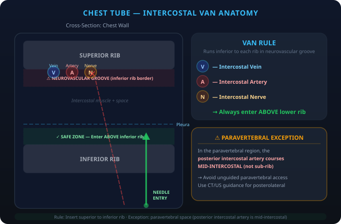
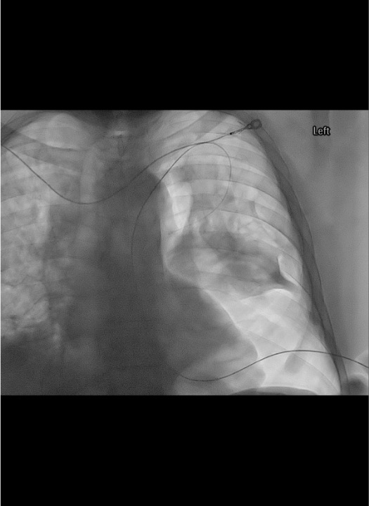
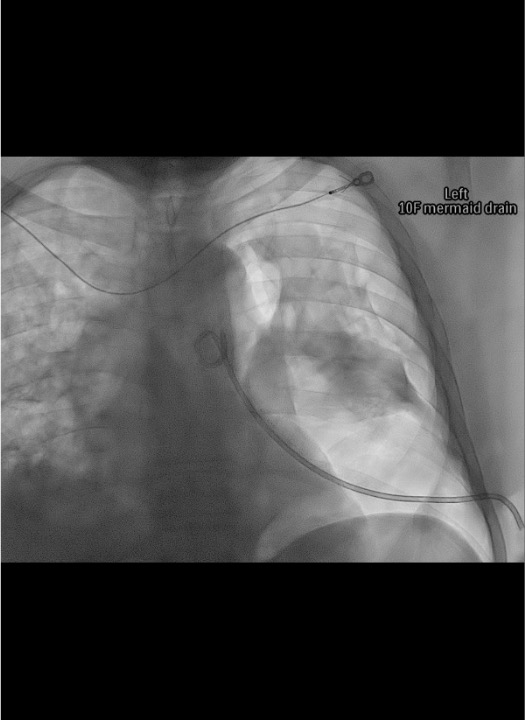
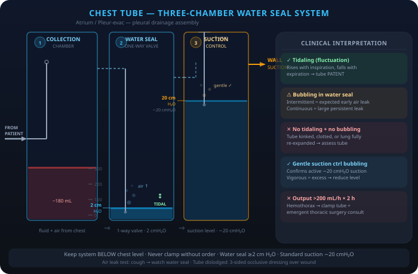

Indications / Contraindications
Indications
- Empyema — purulent pleural fluid (pus or positive Gram stain); 3 stages: exudative → fibrinopurulent → organized. Early drainage essential; delay increases loculation and surgical risk. Mortality reported with delayed drainage.
- Complicated parapneumonic effusion — pH <7.20, glucose <60 mg/dL, LDH >3× upper limit normal, or recurrent after thoracentesis.
- Pneumothorax — large (>25% or apex-to-cupula >3 cm) primary spontaneous PTX; any secondary spontaneous PTX; tension PTX after needle decompression; ventilated patients; traumatic; persistent/recurrent.
- Hemothorax — to guide management: surgical threshold >1000–1500 mL total, >300–500 mL first hour, or >100 mL/h × 3h.
- Malignant pleural effusion — recurrent symptomatic effusion after thoracentesis; may proceed to pleurodesis or tunneled PleurX catheter.
- Chylothorax — thoracic duct injury; drainage guides timing of thoracic duct ligation or lymphatic embolization.
- Postoperative — cardiothoracic and esophageal surgery drainage.
Contraindications
- Absolute: Lung completely adherent to chest wall throughout hemithorax (negated in hemodynamically unstable patient).
- Relative: SIR Category 1 — can safely proceed with INR <3.0, PLT ≥20,000; most anticoagulants do NOT need to be held.
- Overlying cellulitis or Herpes zoster infection at insertion site (choose alternate site).
- Avoid chest tube (prefer alternate therapy) for: CHF effusion (diuresis); hepatic hydrothorax (thoracentesis, TIPS, transplant); pneumothorax ex vacuo (conservative); trapped lung with effusion (decortication or IPC for palliation); endobronchial obstruction + effusion (treat obstruction); mediastinal emphysema (increase O₂, vent changes).
Pre-Procedure Checklist
Relevant Anatomy
Intercostal Anatomy
- VAN (from superior to inferior along inferior rib border): VEIN → ARTERY → NERVE — neurovascular bundle lies in costal groove along INFERIOR surface of rib.
- Enter SUPERIOR to rib to avoid VAN.
- CRITICAL EXCEPTION: Paravertebral/posterior intercostal space — posterior intercostal artery does NOT follow the costal groove near spine; it courses in the MID-INTERCOSTAL space. Older patients with tortuous vessels especially at risk.
- Posterior paravertebral access = higher bleeding risk even with "superior rib" approach.
- Internal thoracic artery/vein: Run 1–2 cm lateral to sternum; avoid anterior entries within 2 cm of sternal border.

Tube Positioning by Pathology
- Pleural fluid (gravity-dependent): Enter posterolateral at 4th–5th ICS posterior axillary line; orient tube posteroinferiorly. In supine patient, fluid collects posteriorly. Guide tip toward spine on AP fluoro, confirm stays close to spine on oblique view.
- Pneumothorax (non-dependent): Enter anteriorly at 2nd ICS midclavicular line OR anterior axillary line; orient tube toward apex. In supine patient, air collects anteriorly. Left anterior placement: confirm cardiac position on imaging first.
- Fissure/fissural loculation: CT guidance required; pigtail catheter often more appropriate than straight tube.
- Scapula: Avoid entry adjacent to inferior scapula — catheter will be displaced when patient adducts arm. Use entry point inferior or lateral to scapula.
How I Do It
Default RadCall approach + community cards
Supplies
Steps
Position and planning
Prep, drape, and anesthesia
Access
Guidewire placement

Serial dilation
Catheter placement
Connect and confirm
Post-placement CXR

Troubleshooting
No fluid drainage after placement
Cause: Tube in fissure, kink, loculation, evacuated collection.
Fix: Confirm with CXR; check for tube kink (visual inspection); flush with 10 mL NS; exchange for larger tube or repositioning under fluoro; CT to assess residual collection.
No tidal fluctuation in water seal
Cause: Tube kinked/occluded, complete lung expansion (normal), tube displaced.
Fix: Confirm kink with CXR; ask patient to cough — if bubbling, air leak present. If no fluctuation + no lung expansion on CXR: obstruction. Flush with saline; if tube blocked → exchange.
Persistent air leak (>5–7 days)
Cause: Bronchopleural fistula (communication between airways and pleural space).
Fix: Increase suction to improve pleural apposition. If suction is perpetuating fistula (aggressive drainage keeping it open): trial water seal. Persistent BPF → thoracic surgery consultation. Blood patch or intrabronchial valve may be attempted.
Loculated empyema not draining
Cause: Fibrin septations preventing drainage through single catheter.
Fix: tPA + DNase combination therapy (tPA 4–6 mg + DNase 5 mg in 50 mL NS instilled q12h, clamp 2h, × 3 days = 6 doses total; stop if bleeding from tube). Two chest tubes for large multiloculated collections. VATS if tPA/DNase fails.
Reexpansion pulmonary edema (REPE)
Cause: Rapid drainage of large chronic effusion; especially long-standing collapse >3 days. Recognition: Cough, chest tightness, hypoxemia, frothy secretions within 1–2h of drainage; CXR shows unilateral pulmonary edema.
Fix: STOP drainage; clamp tube. Supportive care: supplemental O₂, positive pressure ventilation if severe. Limit initial drainage to 1000–1500 mL; clamp for 1–2h before resuming.
Subcutaneous emphysema
Cause: Side holes of tube outside pleural space; large PTX not fully evacuated.
Fix: CXR to confirm tube position; if side holes outside pleura → reposition/exchange. Consider larger caliber tube or second tube for large PTX.
Complications
Immediate
- Malposition (up to 30% in critically ill, most common with non-image guided): intrafissural (impairs drainage), intraparenchymal (risk of abscess, hemothorax), extrapleural (subcutaneous emphysema), mediastinal (surgical consult before repositioning).
- Intercostal artery injury (<1% with IR-guided): can cause hemothorax requiring TAE; recognized by unexpected hemothorax post-insertion; CE-CT to localize; TAE as primary treatment.
- Organ laceration: spleen (left), liver (right), diaphragm (low entry) — rare with image guidance.
- Pneumothorax from tube insertion into effusion: usually small; managed with existing tube.
Delayed
- Reexpansion pulmonary edema (REPE) (<1% but life-threatening): rapid drainage of large chronic effusion; limit to 1000–1500 mL initially.
- Empyema (tube-related): rare with sterile technique (~0.2% with IR-guided).
- Bronchopleural fistula: persistent air leak suggesting epithelialization of pleural-airway communication; thoracic surgery referral if persistent >5–7 days.
- Tube dislodgement: anchor securely; remove pigtail retention string for easier bedside removal if non-IR team removing.
- Tube obstruction: kink or clot; flush with NS daily; exchange if persistent.
Post-Procedure
Daily Assessment
- Vital signs + oximetry daily; chest tube output volume and appearance q8h.
- Water seal chamber: confirm tidal fluctuation with respiration (indicates patent tube in pleural space). No fluctuation = complete drainage OR obstruction.
- Ask patient to cough: bubbling in water seal = active air leak (bronchopleural fistula). Do NOT remove tube if air leak present.
- Auscultation: breath sounds; palpate for subcutaneous emphysema. Inspect exit site for infection, dressing integrity, tube kinking.
Removal Criteria
- Pleural effusion/empyema: Output <200 mL/day; serous-appearing drainage; CXR shows complete drainage; CT confirms if equivocal. Higher thresholds (up to 500 mL/day) used by some; lower threshold (200 mL/day) reduces readmission rate.
- Pneumothorax: No air leak for 24h; no pneumothorax on water seal trial (transition from suction → water seal → observe 4–6h). Brief water seal trial preferred; clamping trial NOT recommended (unnecessary risk of tension PTX). Removal on suction acceptable if criteria met.
- Removal technique: IV narcotic 5–10 min before removal. Remove during end-expiration/Valsalva (minimizes atmospheric pressure gradient). Rapidly cover site with petroleum gauze. Suture closure rarely needed unless large incision.
Critical Pearls
Drainage System & Pleurodesis
Three-Chamber Water Seal System
- Collection chamber: collects drained fluid; graduated for output measurement. Mark level q8h.
- Water seal chamber: one-way valve preventing air re-entry to pleural space. Should contain 2 cm water. Tidal fluctuation with breathing = patent tube. Bubbling = active air leak.
- Suction control chamber: wet column (H₂O, up to -25 cmH₂O) or dry valve (up to -40 cmH₂O). Wall suction must be kept at ≥-80 mmHg (>108 cmH₂O) to deliver desired suction. Typical setting: -20 cmH₂O.
- Heimlich valve: portable one-way flutter valve; enables ambulation; suctionless passive drainage only; for small PTX in ambulatory patients.

Click image to enlargeTroubleshooting the Drainage System
- Collection chamber full: fluid stops draining → change CTDS immediately.
- Chest tube wrapped/twisted by ambulatory patient: untwist tubing before troubleshooting tube position.
- Air bubbling stops: lung reexpanded (check CXR) OR tube/system disconnected (inspect all connections) OR tube occluded.
- Subcutaneous emphysema increasing: side holes outside pleura OR air not adequately evacuated → exchange/reposition.
Chemical Pleurodesis (Talc Slurry)
- Indications: Recurrent malignant effusion, secondary spontaneous PTX, recurrent primary PTX.
- Prerequisites: Complete lung expansion on CXR (trapped lung = pleurodesis failure); pH >7.2 (low pH predicts failure); no active infection.
- Technique: Conscious sedation + 20 mL bupivacaine 0.25% instilled intrapleurally to anesthetize pleura. Instill well-agitated suspension of 5 g talc in 100 mL sterile NS. Clamp tube 1–2h. Rotate patient positions (some advocate). Unclamp and return to suction. Follow removal criteria.
- Expected: Chest pain and fever for 24–48h (pleural inflammation = desired effect). Monitor for ARDS (rare, dose-dependent with fine-particle talc). Talc success rate 70–100%.